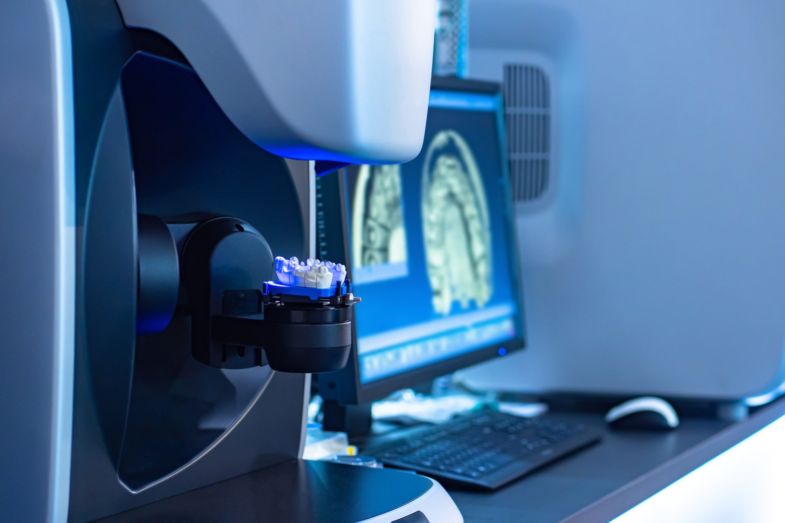
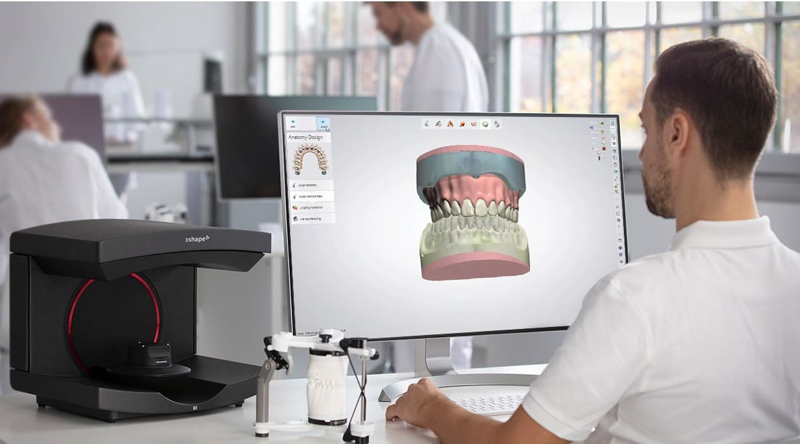
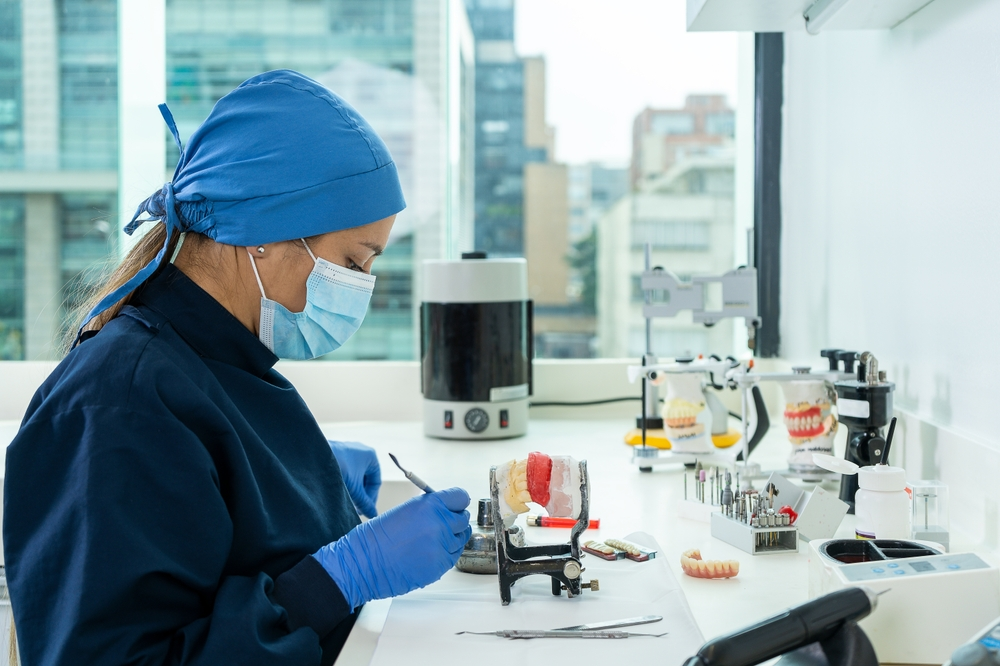
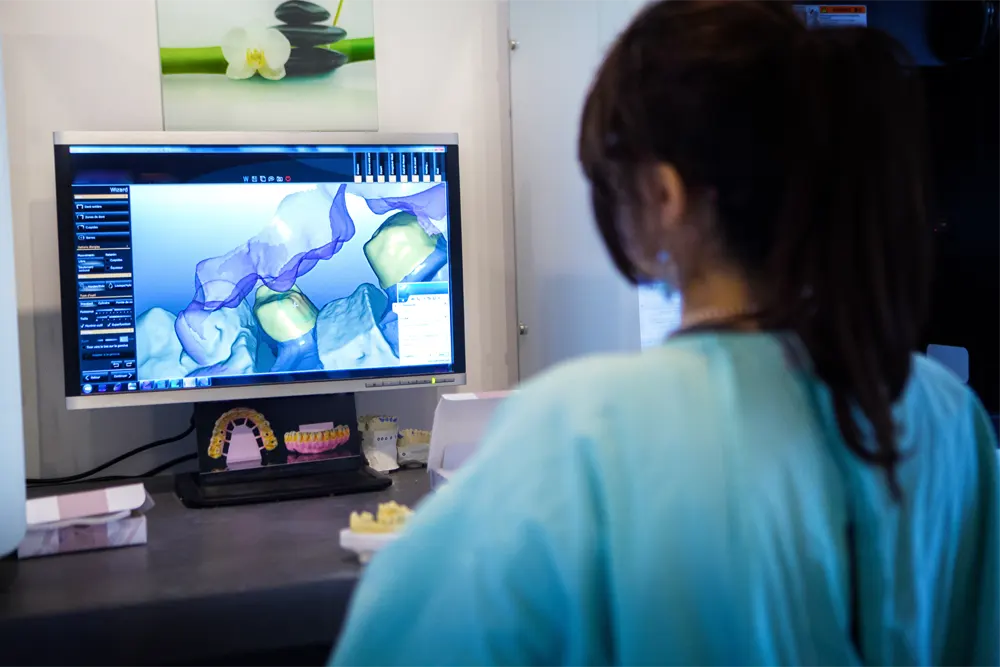
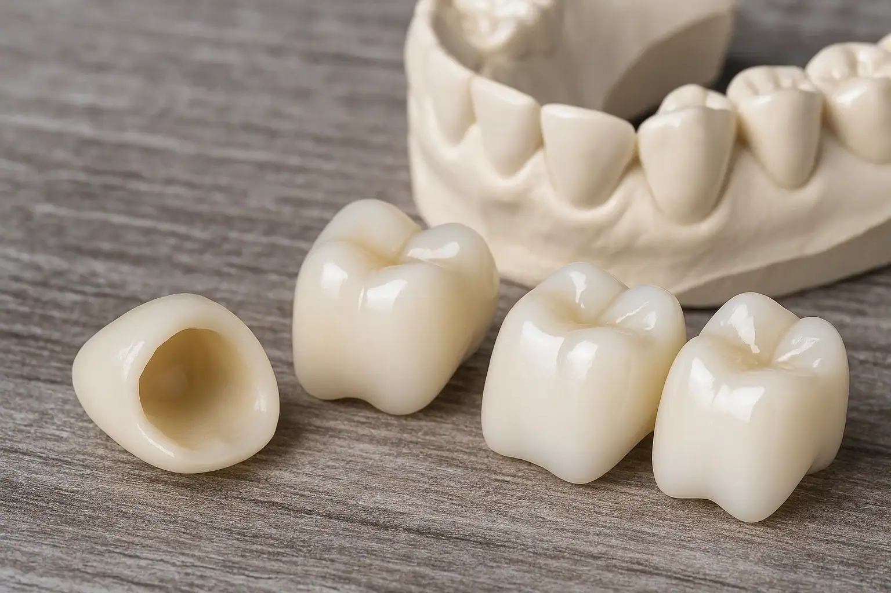

Trabalho artesanal com experiência, planejamento e capacidade técnica. Atendemos exclusivamente dentistas e clínicas odontológicas.


O Laboratório New Star é especializado na confecção de próteses dentárias com alto padrão estético e funcional, atendendo exclusivamente dentistas e clínicas odontológicas.
Combinamos experiência artesanal, planejamento técnico e domínio das mais modernas tecnologias, como CAD/CAM, Fluxo Digital e Planejamento Virtual.
Trabalhamos com materiais de qualidade comprovada e oferecemos uma linha completa de soluções. Nosso compromisso é entregar precisão, estética e confiabilidade em cada etapa do processo, respeitando prazos e necessidades clínicas.
Oferecemos uma linha completa de próteses com tecnologia de ponta e materiais de alta qualidade.
Próteses de porcelana com alta estética e resistência, ideais para dentes unitários e até 3 elementos anteriores. Produzidas por tecnologia CAD/CAM ou por injeção com precisão.
Próteses com excelente estética e resistência à fratura, indicadas para áreas com alta carga mastigatória. Confeccionadas com tecnologia CAD/CAM.
Estrutura metálica revestida por cerâmica, indicada para coroas unitárias, próteses parciais e totais fixas. Solução confiável e duradoura.
Próteses fixas sobre implantes com estrutura metálica ou zircônia revestida com cerâmica ou resina. Ideais para reabilitações totais com excelente resultado clínico.
Protótipos planejados com base na forma, função, adaptação e cor, simulando com fidelidade o dente definitivo. Auxiliam na aprovação estética e funcional.
Próteses totais, PPRs, dentes provisórios e outros dispositivos com resinas fotopolimerizadas de alta qualidade. Indicadas para restaurações provisórias e reabilitações removíveis.
Fixas sobre implantes unitários ou múltiplos, parafusadas ou cimentadas, confeccionadas em metalocerâmica ou materiais metal-free. Oferecem estética, precisão e adaptação.
Placas mio-relaxantes para controle do bruxismo, placas de clareamento e protetores bucais esportivos. Produzidas com tecnologia para conforto, adaptação e durabilidade.
O sistema CAD-CAM, com tecnologia de ponta, envolve o desenho de uma estrutura protética computadorizada (CAD: Computer Aided Design) seguido da confecção das próteses por uma máquina de fresagem computadorizada (CAM: Computer Aided Manufacturing), a partir dos melhores materiais cerâmicos, ou impressora 3D.
Nossos técnicos estudam o arquivo digital, correlacionando essas informações com as necessidades estéticas e funcionais do paciente para o desenho da estrutura protética computadorizada.


Entre em contato para solicitar orçamentos, tirar dúvidas ou iniciar uma parceria. Atendemos exclusivamente dentistas e clínicas odontológicas.
Preencha o formulário e entraremos em contato em breve.